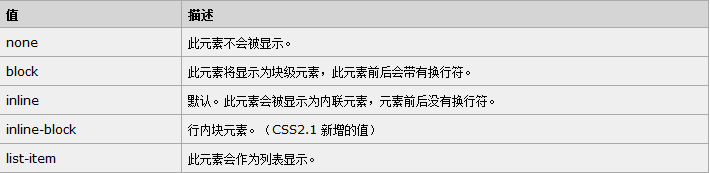
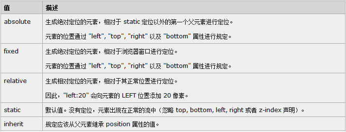
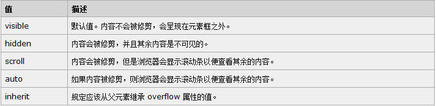

（外部样式）<（内部样式） <（内联样式）
外部样式：外部引入的css表
内部样式：头部中写入的样式
内联样式：标签上的style样式
样式优先级例子
1.内联样式表的权值最高 1000；
2.ID 选择器的权值为 100;
3.Class 类选择器的权值为 10;
4.HTML 标签选择器的权值为 1 ;
选择器优先级例子
A 选择器都有一个权值，权值越大越优先；
B 当权值相等时，后出现的样式表设置要优于先出现的样式表设置；
C 创作者的规则高于浏览者：即网页编写者设置的CSS 样式的优先权高于浏览器所设置的样式；
D 继承的CSS 样式不如后来指定的CSS 样式；
E 在同一组属性设置中标有“!important”规则的优先级最大
css优先级法则图
1.id选择器(# myid)
2.类选择器（.myclassname）
3.标签选择器（div, h1, p）
4.相邻选择器（h1 + p）
5.子选择器（ul > li）
6.后代选择器（li a）
7.通配符选择器（ * ）
8.属性选择器（a[rel = "external"]）
9.伪类选择器（a: hover, li:nth-child）
1.display常见的值

1.position常见的值

1.overflow常见的值

2.overflow用法
文字超出宽度省略号显示：overflow:hidden; white-space: nowrap; text-overflow: ellipsis;（文字需要有宽度才能进行截取）